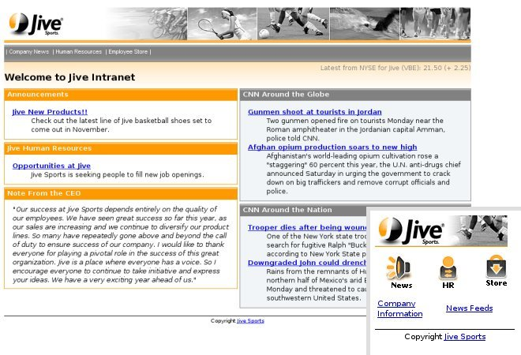

The Jive Sport intranet portal illustrates the concepts of using Volantis Multi-Channel Server. The Jive demonstration is written using XDIME 2 markup. Policies are available for a PC and Smartphone versions of the site. The project contains a home page, demonstrating a use of fundamental elements of the MCS-based web application, such as image policies, layouts, and themes. The Jive sub-pages focus on the use of the XDIME 2 markup groups, such as form elements and conditional markup.
The figure shows the Jive Home Page. The main image shows how it looks on the PC, while the insert represents an emulated Smartphone version of the page.
